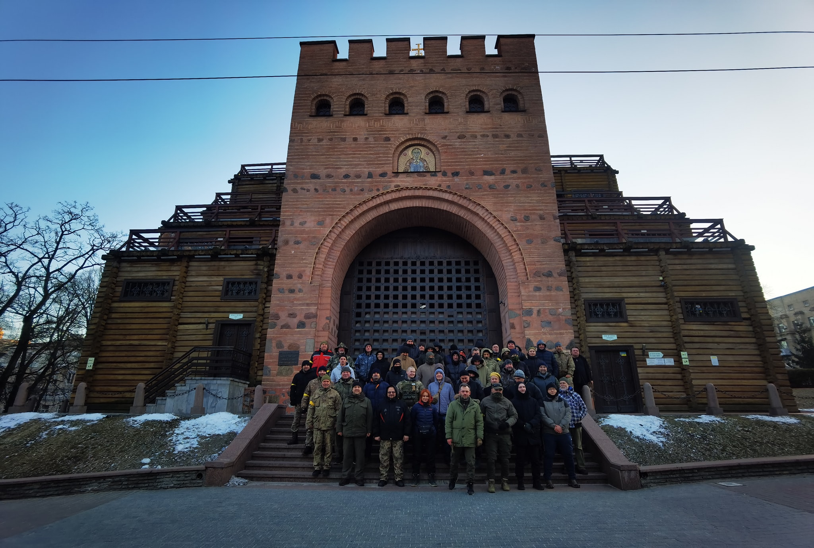
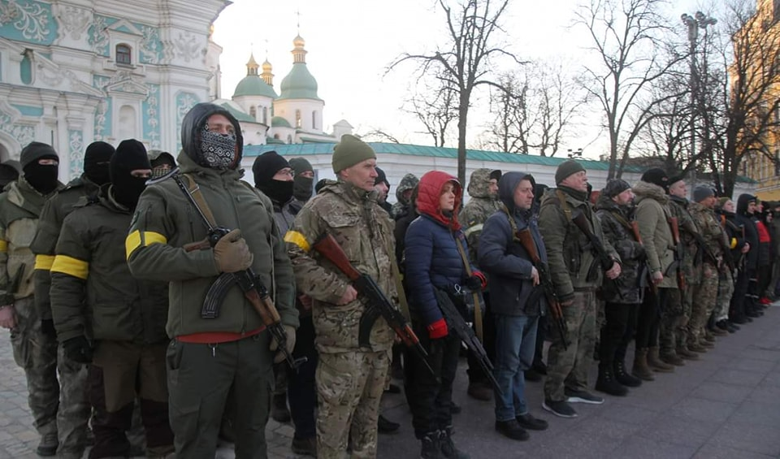
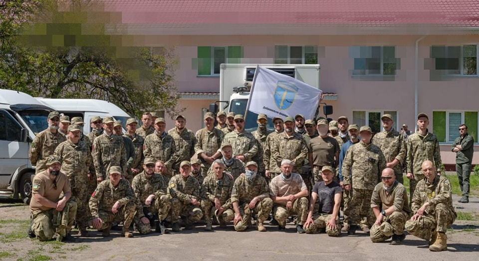
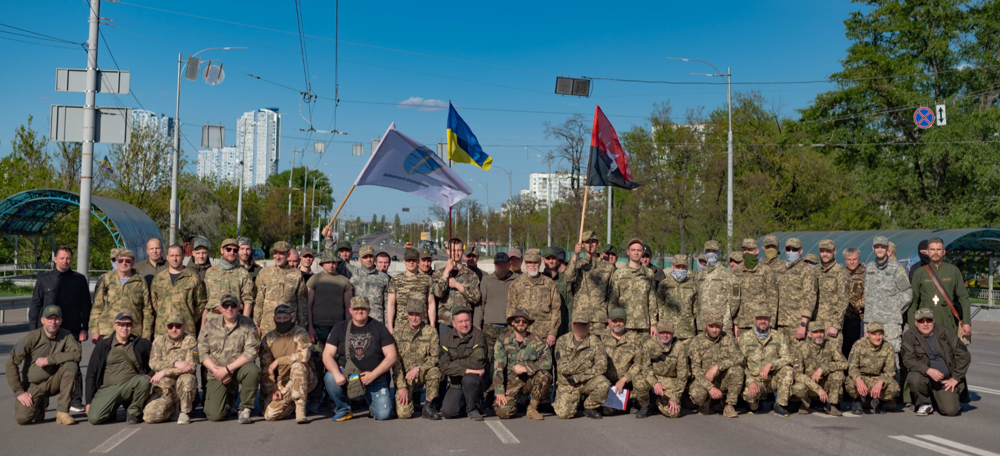
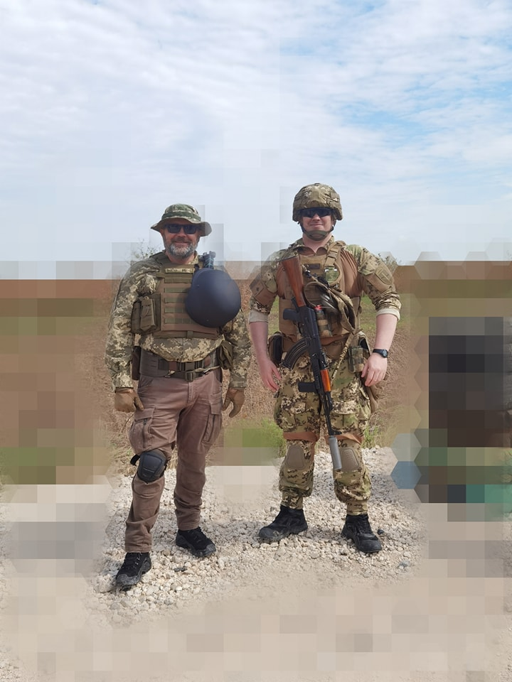
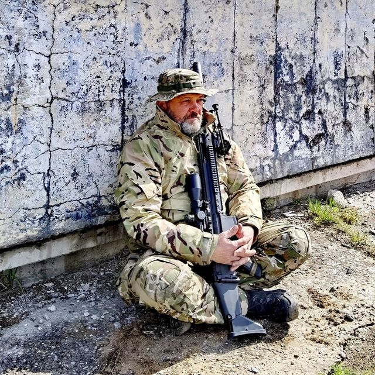
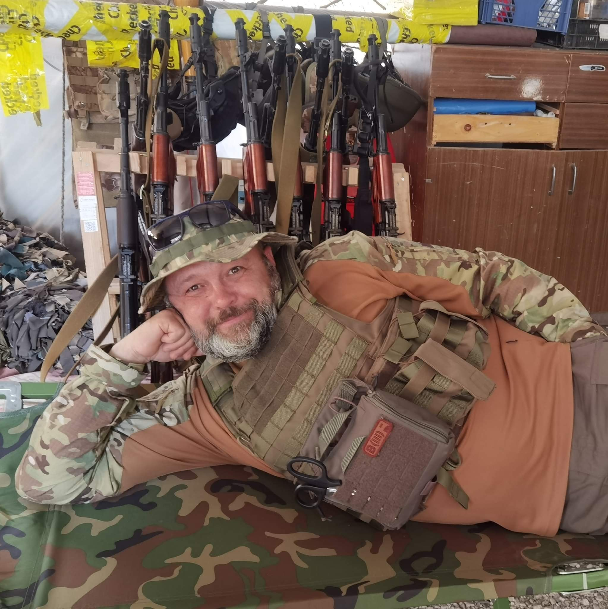

Корнієнко Олександр / Нестор Воля
Громадський активіст і медійник з 2000-х: інфоВАРТА, УСБ, Марш Захисників. З лютого 2022 — доброволець ЗСУ / ССО. OSINT-аналітик, дослідник мереж впливу, AI-автоматизація.
Довоєнна діяльність
Активна волонтерська та громадська діяльність. Співзасновник Громадської Ініціативи інфоВАРТА — автор і ведучий репортажів та ефірів на YouTube-каналі «Нестор Воля». Блогер, громадський діяч. Широка мережа суспільних контактів.
Ключові ініціативи
- Торгова марка «THERMOS» (склади-холодильники), Дніпро
- Особистий бренд «Kornisan» — інженерні послуги
- Співзасновник Української Спілки Блогерів (УСБ), редактор Маніфесту (2020)
- Співорганізатор Маршу Захисників України, редактор Засадничих Принципів (2021)
- Популяризатор впровадження національної абетки «Рутенія» — авторства лауреата Шевченківської премії В. Я. Чебаника (abetkarutenia.com.ua)
- Організатор подій, виставок, показів патріотичних фільмів в зоні ООС (інфоВАРТА)
- Автор OSINT-досліджень і статей: dev.ua · DOU · Drukarnia
Військова служба
Оборона Києва. Заступник командира батальйону з морально-психологічного забезпечення ДФТГ «Вільна Україна».




ССО ЗСУ. Добровільно мобілізувався. Старшина роти спеціального призначення — Миколаївщина та Херсонщина. УБД Нова Каховка, літо 2023.
Espreso TV: «Незабаром Херсон буде оточений» — офіцер руху опору «Вільна Україна»



6-й Окремий Полк ССО «Рейнджер» (Хмельницький). Переведений за власною ініціативою. Червень–вересень 2024 — медійні комунікації, рекрутинг, зв'язки з громадськістю.
→ Детальний звіт про діяльність у Рейнджері, 2024OSINT та дослідницька діяльність
Практика ручного OSINT з 2000-х: корпоративні розслідування (антирейдерство 2006–2008), акторський аналіз, RU-мережевий OSINT, графовий аналіз Telegram-мереж, InfoOps.
Мережа впливу Браскі (2000–2026) · actor profiling · network mapping · джерельно-доказова логіка
Корпоративний OSINT: інфраструктурні зв'язки з РФ · WHOIS/DNS · Wayback
Ручний складний кейс · архівний аналіз · таймлайн · матриця протиріч
AI для OSINT: Actor pipeline · ArkhamMirror · Telegram · Berkeley Protocol · Doppelganger
Контакти та посилання
+38 097 817 0416 · Signal · WhatsApp